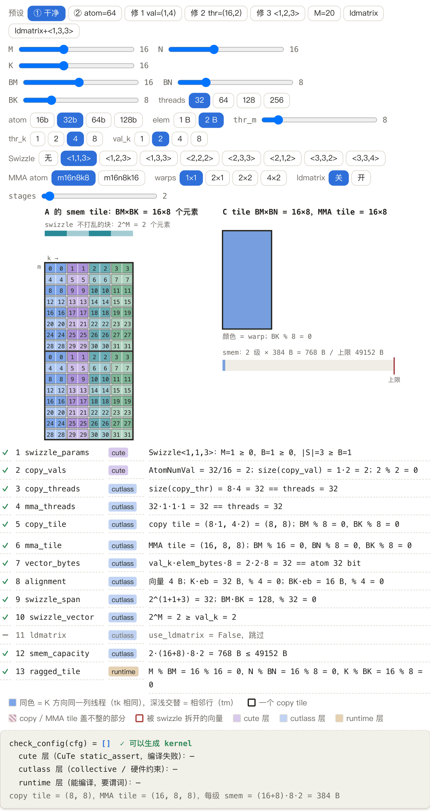
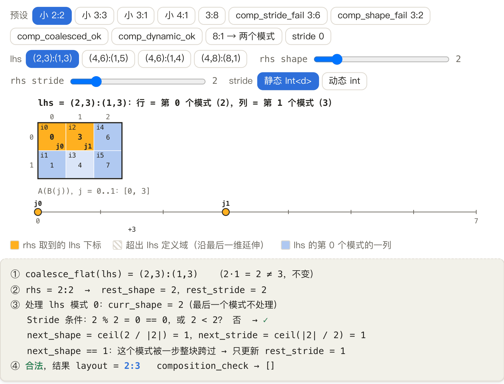
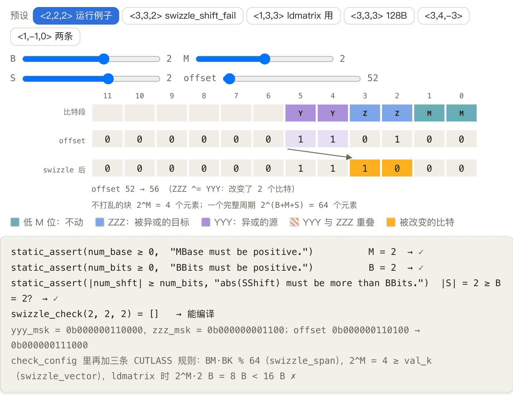
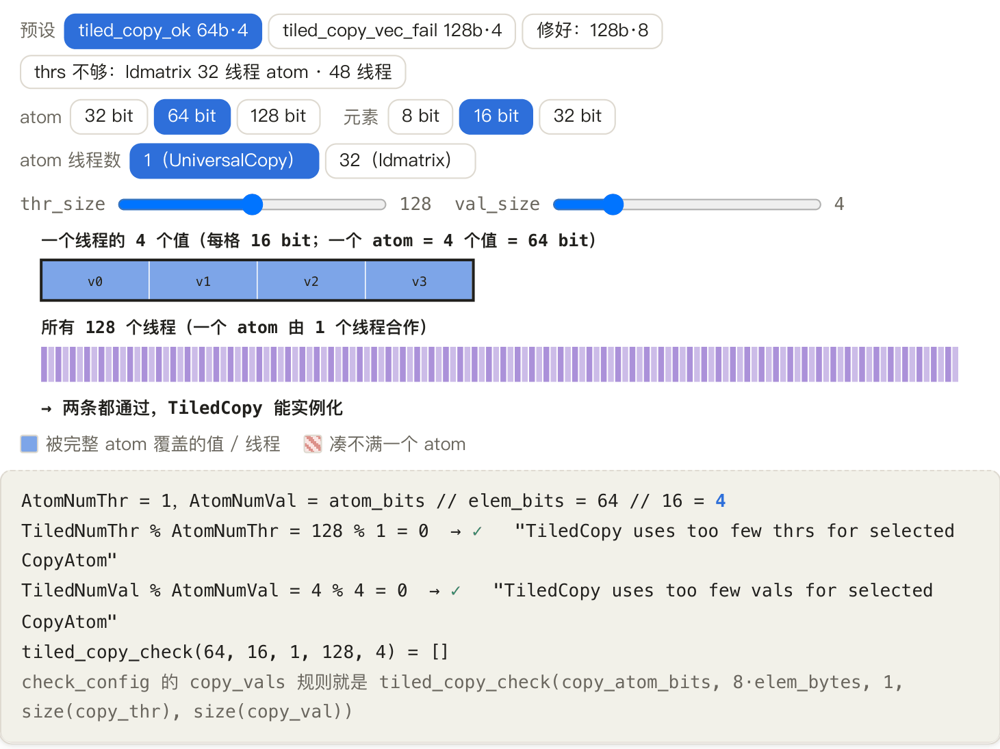
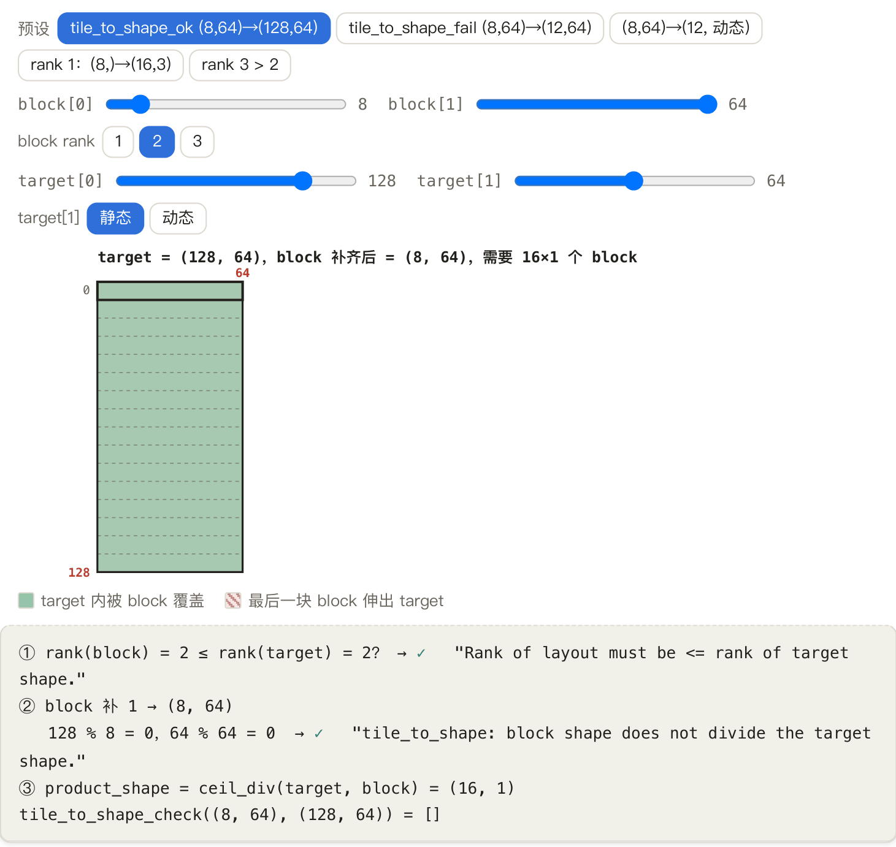
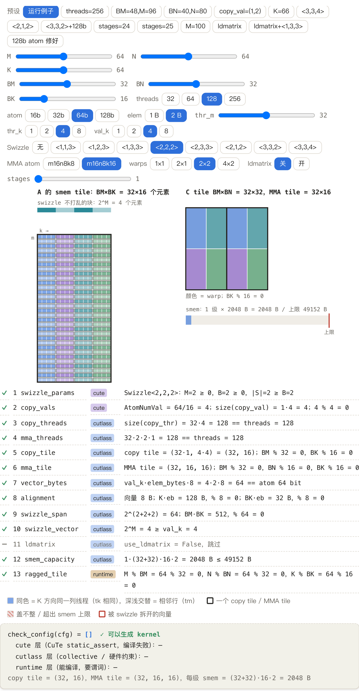

C2 · 编译期合法性检查：复刻 CuTe 的 static_assert，再给 GEMM 配置做体检
静态 shape 和 stride 的第二个好处是：很多配置错误在编译期就被 static_assert 拦下来，而不是在 GPU 上悄悄算出错误结果。这道题先复刻几条真实的 CuTe static_assert（composition 的两条整除条件、Swizzle 参数、TiledCopy 线程/值数、tile_to_shape），和真实编译器对拍 63 个程序；再给运行例子的整套 GEMM 配置做一次体检，分清哪些错误 CuTe 会拦、哪些要靠 CUTLASS 层面的约束、哪些能编译但需要运行时谓词。
文件: mine/c2_compile_checks.py 你的代码 · tests/test_c2_compile_checks.py 测试 · solutions/c2_compile_checks.py 参考解
题面速览
- 背景知识：Layout Algebra 与编译 的“编译期合法性检查”。
- 在体系里的位置：composition 的两条整除条件在 composition_impl；Swizzle 的三条参数检查在 swizzle.hpp；“too few thrs / vals” 在 copy_atom.hpp；
tile_to_shape的两条在 layout.hpp。 - 你要实现：
composition_check、swizzle_check、tiled_copy_check、tile_to_shape_check、predict_compiles、check_config。coalesce_flat、Violation、GemmConfig、SNIPPETS、RUNNING_EXAMPLE已经给出。 - 关键规则：
- 动态值用
None表示，涉及它的检查一律跳过（CuTe 叫 weak divisibility condition：只在能静态验证时验证）。 - composition 先把 lhs
coalesce_flat；rhs 是 tuple 时每个模式单独检查（右分配律），消息去重。 - 每个 rhs 模式：
rest_stride % curr_shape == 0 or rest_stride < curr_shape，否则 Stride 条件失败；new_shape = min(ceil(curr_shape/rest_stride), rest_shape)必须整除rest_shape，否则 Shape 条件失败。 check_config按题面表格顺序报告 13 种 code，layer 是cute/cutlass/runtime之一。
- 动态值用
验收要点：15 个手写 CuTe 程序和 48 个随机 composition 程序，能否编译、第一条 static_assert 消息都和真实 clang + CuTe 头文件一致 · 两条整除条件、coalesce 先行、动态跳过、stride 0 · rhs 分配与去重 · Swizzle、TiledCopy、tile_to_shape 的消息 · 运行例子体检为空 · ldmatrix、线程数、tile 整除、向量宽度、对齐、swizzle 跨度、smem 容量（24 级刚好放下，25 级超）、非整除问题尺寸各自报出正确的 code 和 layer。
- static_assert：C++ 的编译期断言，条件为假时编译失败并打印消息。
- weak divisibility condition（弱整除条件）：CuTe 的说法：两边都是静态整数时才检查，有一边是运行时值就放行。
- 谓词（predication）：给每次访存加一个“是否越界”的条件，处理问题尺寸不是 tile 整数倍的最后一块。
- ldmatrix：SM75+ 的 warp 级指令，一次从 shared memory 读若干个 8×8 的 16-bit 矩阵到寄存器，每行要求 16 字节连续。
直觉与类比
盖楼之前图纸要过审：结构规范（CuTe 的 static_assert）是硬性规定，梁的跨度不能被柱距整除，图纸直接打回；设计院的内部规范（CUTLASS collective 的约束，如“copy 的向量宽度必须正好是一个 atom”“ldmatrix 需要 16 字节一行”）不是物理定律，但违反了要么造不出来、要么很难用；现场情况（运行时）比如地块不是整数个开间，图纸能过审，但施工时要在最后一跨特殊处理（谓词）。好的审查要把三类问题分开说清楚，而不是只说“不行”。
CuTe 的检查都写成 static_assert，条件里只用 Int<N> 这样的编译期常量；一旦某个 shape 或 stride 是运行时 int，检查就退化为“放行”（composition_impl 里的 if constexpr (is_static<...>::value)）。所以同一个 composition，静态时会被拒绝，动态时能编译、运行时给出没有意义的结果：comp_dynamic_ok 就是这样。这也是 CUTLASS 把 tile 形状做成模板参数的另一个理由。
图解：一个配置要过的三道关
static_assert（本题和真实 CuTe 对拍）；第二层是 CUTLASS 的 collective / 硬件指令的要求，本题按 CUTLASS 的写法建模，不是对拍出来的；第三层能编译，但最后一块 tile 要加谓词。从小例子开始：先在草稿纸上手算
先别管 64×64 的运行例子。拿一个小到可以把每个格子都写出来的配置，把 13 条规则一条一条代入数字手算一遍；再故意改坏一个参数，看哪几条规则先后亮红灯、每一步修复又会牵出哪条新规则。然后放大到测试里的运行例子，最后写成一般公式。composition 的两条整除条件最绕，单独再用一个 6 个元素的 lhs 手算一遍。
① 小：一个 warp 的 16×8×8 GEMM
M=N=K=16，tile 16×8×8，32 线程，half，32 bit 的 copy atom（每次 2 个 half），Swizzle<1,1,3> ，MMA m16n8k8 × 1 个 warp，2 级 smem。
13 条规则全部通过：check_config == []
smem = 2·(16+8)·8·2 = 768 B
② 小，改坏：想把 copy 向量拓宽到 64 bit
只改 copy_atom_bits = 64 ，然后一步步修。每修一处，就有下一条规则冒出来。
atom=64：
[copy_vals, vector_bytes]
+ copy_val=(1,4)：
[copy_tile, swizzle_vector]
+ copy_thr=(16,2)：[swizzle_vector]
+ Swizzle<1,2,3>：[]
③ 运行例子：64³，tile 32×32×16，128 线程
测试 test_running_example_is_clean ：copy (32,4)×(1,4) 、64 bit atom、Swizzle<2,2,2> 、m16n8k16 × (2,2,1)。
check_config == []
每级 smem 2048 B：
24 级 = 49152 B 刚好放下，25 级超
use_ldmatrix=True → [ldmatrix]
（2^2·2 B = 8 B < 16 B）
④ 一般把 ①–③ 里反复出现的模式写成规则：几乎每一条都是“某个量必须是另一个量的整数倍”。
CuTe（编译失败）：
val % (atom/elem_bits) == 0
composition、tile_to_shape 整除
CUTLASS（建模）：
tile % (线程·值) == 0
val_k·elem_bits == atom_bits …
运行时：M % BM ≠ 0 → 谓词
✎ 草稿纸 1：小配置 ① 逐条体检（M=N=K=16，BM=16，BN=8，BK=8，threads=32，half）
先把会反复用到的量算好：
elem_bits = 8·2 = 16
AtomNumVal = copy_atom_bits / elem_bits = 32/16 = 2 （一次 copy 搬 2 个 half = 4 B 向量）
copy tile = (thr_m·val_m, thr_k·val_k) = (8·1, 4·2) = (8, 8)；size(copy_thr) = 32， size(copy_val) = 2
MMA tile = (16·1, 8·1, 8·1) = (16, 8, 8)
# code layer 代入 结论
1 swizzle_params cute Swizzle<1,1,3>：M=1≥0，B=1≥0，|S|=3≥B=1 ✓
2 copy_vals cute size(copy_val) % AtomNumVal = 2 % 2 = 0 ✓
3 copy_threads cutlass size(copy_thr) = 32 == threads = 32 ✓
4 mma_threads cutlass 32·(1·1·1) = 32 == threads ✓
5 copy_tile cutlass BM % 8 = 16 % 8 = 0，BK % 8 = 8 % 8 = 0 ✓
6 mma_tile cutlass 16 % 16 = 0，8 % 8 = 0，8 % 8 = 0 ✓
7 vector_bytes cutlass val_k·eb·8 = 2·2·8 = 32 == 32 bit ✓
8 alignment cutlass K·eb = 32 B % 4 = 0，BK·eb = 16 B % 4 = 0 ✓
9 swizzle_span cutlass 2^(1+1+3) = 32，BM·BK = 128 % 32 = 0 ✓
10 swizzle_vector cutlass 2^M = 2 ≥ val_k = 2 ✓
11 ldmatrix cutlass use_ldmatrix = False跳过
12 smem_capacity cutlass 2·(16+8)·8·2 = 768 B ≤ 49152 B ✓
13 ragged_tile runtime 16 % 16 = 0，16 % 8 = 0，16 % 8 = 0 ✓
→ check_config(cfg) == []
改坏 ②：copy_atom_bits = 64（UniversalCopy<uint64_t>，一次 4 个 half）
AtomNumVal = 64/16 = 4，每线程只有 2 个值：2 % 4 = 2 ≠ 0 → copy_vals ✗（真实 CuTe 的 static_assert）
每线程连续 2 个 half = 4 B，atom 要 8 B：2·2·8 = 32 ≠ 64 → vector_bytes ✗
→ ['copy_vals', 'vector_bytes']
修 1：copy_val = (1,4)（每线程 4 个值，正好一个 atom）
copy_vals：4 % 4 = 0 ✓；vector_bytes：4·2·8 = 64 ✓
但 copy tile = (8·1, 4·4) = (8, 16)，BK = 8：8 % 16 = 8 ≠ 0 → copy_tile ✗
Swizzle<1,1,3> 只保证 2^1 = 2 个元素连续，向量有 4 个：2 < 4 → swizzle_vector ✗
→ ['copy_tile', 'swizzle_vector']
修 2：copy_thr = (16,2)（仍是 32 线程：K 方向 2 个线程 × 4 个值 = 8 = BK）
copy tile = (16, 8)：16 % 16 = 0，8 % 8 = 0 ✓ → ['swizzle_vector']修 3：Swizzle<1,2,3>：2^2 = 4 ≥ 4 ✓；span 2^(1+2+3) = 64，128 % 64 = 0 ✓ → []
下面的“小游乐场”就是草稿纸 1 的可交互版本：滑块和按钮改配置，图下方的清单逐条重算。左边画的是 A 的 smem tile（BM×BK 个元素），颜色是“哪个线程负责搬这个元素”，粗框是一个 copy tile（所有线程一起搬一次的范围）。盖不整的部分是红色斜线，对应 copy_tile 。顶上的标尺是 swizzle 不打乱的块（2^M 个元素）；如果一个线程的向量跨过了块边界，这个向量会用红框标出来，对应 swizzle_vector 。右上是 C tile 被 MMA tile 切分的样子（颜色 = warp），右下是 smem 容量条。先点预设“② atom=64”，再依次点“修 1/修 2/修 3”，对照草稿纸。

第二张草稿纸：6 个元素的 composition
composition 的检查完全是整数运算，但不画图很难看出它在问什么。取 lhs = (2,3):(1,3) ：一维下标 i 先走第一个模式（2 个），再走第二个模式（3 个）。把它写成一张 2×3 的表：
lhs (2,3):(1,3) |
列 0 |
列 1 |
列 2 |
列 3（越界延伸） |
|---|---|---|---|---|
行 0 |
0i=0 |
3i=2 |
6i=4 |
9i=6 |
行 1 |
1i=1 |
4i=3 |
7i=5 |
10i=7 |
格子里的大数字是 lhs 的输出 offset = 行·1 + 列·3，小字是一维下标 i（列优先：i = 行 + 2·列）。rhs = s:d 依次取下标 0, d,2d, …, (s−1)·d，composition 的结果就是这些格子的 offset 序列。CuTe 要求这个结果仍能写成一个 layout，而它判断的方法不是“看结果是不是等差数列”，是下面的两条整除条件：
✎ 草稿纸 2：lhs = (2,3):(1,3)，coalesce 后不变（2·1 = 2 ≠ 3）；只处理 lhs 除最后一个之外的模式，即 curr_shape = 2 这一个
rhs 2:2 rest = (shape 2, stride 2)
Stride：2 % 2 = 0 ✓
next_shape = ceil(2/2) = 1，next_stride = ceil(2/2) = 1
next_shape == 1：第一个模式被一步整块跨过，只更新 rest_stride = 1
循环结束，结果没有追加模式 → Layout{rest_shape, rest_stride·最后一个 stride} = 2
: 1·3 = 2:3
对照表：下标 0, 2 → offset 0, 3 ✓ 真实 CuTe 打印 _2:_3
rhs 3:3 Stride：3 % 2 = 1 ≠ 0，且 3 ≥ 2 → ✗ Stride Divisibility
Condition
对照表：下标 0, 3, 6 → offset 0, 4, 9（步长 4, 5，不等差：每一步落在“一列半”的位置） rhs 3:1 Stride：1 < 2 ✓
next_shape = ceil(2/1) = 2，next_stride = ceil(1/2) = 1
new_shape = min(next_shape, rest_shape) = min(2, 3) = 2
Shape：3 % 2 = 1 ≠ 0 → ✗ Shape Divisibility
Condition
对照表：下标 0, 1, 2 → offset 0, 1, 3：前 2 个在第 0 列，第 3 个跨到下一列，3 不能被 2 整齐切开
rhs 4:1 Stride：1 < 2 ✓；new_shape = min(2, 4) = 2，4 % 2 = 0 ✓
追加模式 2 : 1·1；rest_shape = 4/2 = 2，rest_stride = ceil(1/2) = 1
结果 (2, 2) : (1, 1·3) = (2,2):(1,3) 对照表：0, 1, 3, 4 ✓ 真实 CuTe 打印 (_2,_2):(_1,_3)
注意 rhs 2:3：下标 0, 3 → offset 0, 4，只有两个点，“看起来”是步长 4 的等差数列，
但 3 % 2 ≠ 0 且 3 ≥ 2 → CuTe 照样报 Stride Divisibility Condition。
规则判的是“rhs 的步长能不能整齐地对上 lhs 的模式边界”，不是结果长什么样。
（以上 5 个结论和打印结果都用真实 CuTe 头文件编译验证过。）
图解详解：四条 static_assert 与一次完整体检
这些图是交互版讲解页的静态快照，显示的是默认参数下的状态。文中提到的按钮、滑块和悬停提示在这里不能操作；图上的数字和下方的文字、表格、黑底面板说的是同一组值，可以直接对照你的函数输出。
这一节把要实现的每个函数画成一张可交互的图。前四张对应四个“复刻真实 static_assert”的函数（结果和真实编译器对拍），第五张是 check_config 的完整体检。点按钮、拖滑块、悬停格子，黑底面板会把当前数字逐步代入公式。
先看全局：predict_compiles 只是一个分派器，真正的规则都在下面四个函数里。
def predict_compiles(desc):
kind = desc[0]
if kind == "composition": msgs = composition_check(desc[1], desc[2]) # 图 1
elif kind == "swizzle": msgs = swizzle_check(*desc[1:]) # 图 2
elif kind == "tiled_copy": msgs = tiled_copy_check(*desc[1:]) # 图 3
elif kind == "tile_to_shape": msgs = tile_to_shape_check(desc[1], desc[2]) # 图 4
elif kind == "always_ok": msgs = []
else: raise ValueError(kind)
return (not msgs, msgs[0] if msgs else "") # 只报第一条，和编译器停在第一个 static_asser
# check_config(cfg)：swizzle_check / tiled_copy_check + 11 条 CUTLASS 与运行时规则（图 5）
图 1 · composition_check ：rest_stride 沿 lhs 的模式一步步折叠
左边的网格就是“第二张草稿纸”的表，换成可以任选 lhs 和 rhs 的版本：每格的大数字是 lhs 的 offset，小字是一维下标 i；黄色格子是 rhs 依次取到的下标 0, d, 2d, …（角上的数字是它是 rhs 的第几个元素）。斜线列是超出 lhs 定义域、沿最后一维延伸出来的部分。下面的数轴把取到的 offset 排成一行，看结果长什么样。黑底面板是 _composition_mode 的逐步追踪，每个比较都代入了当前数字。
要看的三件事：① 先换 lhs 到 (4,6):(1,4) ，它 coalesce 成 24:1 ，任何 rhs 都直接合法；② 在 (4,6):(1,5) 上拖 rhs stride：只有 d 是 4 的倍数，或者 d < 4 时才过 Stride 条件；③ 打开“动态 stride”，同一个 3:6 的两条检查都被跳过，编译通过，但结果的 stride 是运行时才知道的“?”。

注意 next_shape == 1 的分支：rhs 的步长大于等于这个模式的长度，这个模式被一步“整块跨过”，结果里不出现它，只是把 rest_stride 除下去（3:8 在 (4,6):(1,5) 上：8/4 = 2，结果 3 : 2·5 = _3:_10 ）。
源码对照：两条断言在 Stride Divisibility 和 Shape Divisibility ，都包在 if constexpr (is_static<…> and is_static<…>) 里，旁边就是注释掉的 strong 版本和运行时 assert ；next_shape / next_stride 的算法在 同一个 fold 里；rhs 是 tuple 时的右分配律、stride 0 和 lhs 只有一个模式的捷径在 composition_impl 开头；composition 先 coalesce lhs 再调 composition_impl ，见 composition() 。
图 2 · swizzle_check ：三条断言 = 三段比特不越界、不重叠
Swizzle<B,M,S> 作用在 offset 的二进制上：最低 M 位不动（MBase），从第 M+S 位开始的 B 位（YYY，源）异或到从第 M 位开始的 B 位（ZZZ，目标）上。三条 static_assert 说的就是：M、B 不能是负数（段的位置和长度要有意义），以及|S| ≥ B ：源段和目标段不能重叠，否则 YYY 的一部分就是 ZZZ 自己，异或会改写自己的输入，变换不再可逆。拖 B、M、S 看三段怎样排开，红色斜线就是重叠的比特。下方用一个具体 offset 演示一次变换。

的比特段" loading="lazy" style="width:100%;aspect-ratio:1461/1125">Swizzle<3,3,2> 失败的原因在图里一眼可见：YYY 是第 5–7 位，ZZZ 是第 3–5 位，第 5 位同时是源和目标。CuTe 用|S| 而不是 S ，因为负的 S 表示 YYY 在 ZZZ 下面（往左移），检查的仍是两段的距离；<3,4,-3> 合法。源码：Swizzle 的三条 static_assert 、两个 mask 和 apply 。
图 3 · tiled_copy_check ：线程数、值数都要是 atom 的整数倍
一个 Copy_Atom 是“ AtomNumThr 个线程、每线程 AtomNumVal 个值”的一次搬运。AtomNumVal = atom_bits / elem_bits ：64 bit 的 atom 搬 half 就是 4 个值。TiledCopy 把这个 atom 平铺到 thr_size 个线程、每线程 val_size 个值上，所以两者都必须是 atom 的整数倍，盖不整的部分（红色斜线）就是 static_assert 拒绝的原因。上面一行是一个线程的值（每格宽度正比于元素位宽，粗框 = 一个 atom），下面一行是所有线程（粗框 = 一个 atom 的线程组）。

源码：TiledCopy 的 AtomNumThr / AtomNumVal 与两条断言。断言写在 struct TiledCopy 的类体里，所以只有当这个类型被实例化（例如调用 partition_S ）时才触发：oracle/c2_snippets/tiled_copy_vec_fail.cpp 特意调了一次 get_slice(0).partition_S(t) 。ldmatrix 的 atom 线程数是 32，见 SM75_U32x4_LDSM_N 的 Copy_Traits 的 ThrID = Layout<_32> 。
图 4 · tile_to_shape_check ：block 能不能把 target 铺满
tile_to_shape(block, target) 把一个 block（例如一个 swizzle 过的 8×64 smem atom）重复铺成 target 形状。block 的 rank 不能超过 target（第一条断言），然后 block 末尾补 1 到同样的 rank，每一维都要整除（第二条断言）。图中虚线是 ceil_div(target, block) 个 block 的位置，超出 target 的部分是红色斜线：只要有它，就会被拒绝。target 有动态维时，第二条检查被跳过。

tile_to_shape_fail 正是“想用 8 行的 swizzle atom 铺一个 12 行的 smem tile”：12 不是 8 的倍数。源码：tile_to_shape ，注意整除检查外面同样是 if constexpr (is_static<decltype(target_shape)>::value) 。真实
的 CUTLASS SM80 collective 也有同一类约束：“SmemLayoutAtom must evenly divide tile shape.” ，以及 Stages >= 2 。
图 5 · check_config ：给运行例子做完整体检
和小游乐场是同一个组件，换成运行例子（A/B 64×64、tile 32×32×16、128 线程、copy (32,4)×(1,4) 、64 bit atom、Swizzle<2,2,2> 、m16n8k16 × (2,2,1)）。预设按钮就是测试里的每一个变体，点一下就能看到测试期望的 code 列表是怎么来的。smem tile 是 32×16，格子较小，悬停看线程号。几个值得手推的状态：
- threads=256：copy 只有 32·4 = 128 个线程，MMA 只有 32·4 = 128 个线程，两条都违反，但 tile 本身都整除。
- BM=48, M=96：copy tile 32 行不整除 48，MMA tile 16·2 = 32 行也不整除 48；M=96 是 48 的倍数，所以没有 ragged。
- stages 24 / 25：每级 (32+32)·16·2 = 2048 B，24 级 = 49152 B 正好等于上限，25 级 = 51200 B 超出。看右下角的容量条。
- use_ldmatrix：
Swizzle<2,2,2>只保证 4 个 half = 8 B 连续，ldmatrix 每行要 16 B；换成<1,3,3>（8 个 half）就通过。顶上第二条标尺是 ldmatrix 的 16 B 行。

最后一个预设“128b atom 修好”对应提示 3 的问题 1：atom 改成 128 bit 后，要同时把 copy_val 改成 (1,8) 、把 BK 改成 32（或者 copy_thr=(64,2) 且 BM=64），还要把 swizzle 换成 M ≥ 3 的，比如 Swizzle<2,3,3> ，否则
swizzle_vector 不过（2^2 = 4 < 8）。
速查：全部规则
| # | 函数 / code | layer | 违反条件；代入运行例子 | 真实位置 |
|---|---|---|---|---|
| — | composition_check |
cute | lhs 先 coalesce；每个非最后模式：rest_stride % curr_shape == 0 orrest_stride < curr_shape ；new_shape = min(ceil(curr_shape/|rest_stride| ), rest_shape) 整除 rest_shape ；有 None 就跳过 |
layout.hpp composition_impl |
| — | swizzle_check |
cute | M < 0；B < 0；|S| < B（按这个顺序，可以多条） | swizzle.hpp |
| — | tiled_copy_check |
cute | thr % atom_thr ；val % (atom_bits // elem_bits) |
copy_atom.hpp TiledCopy |
| — | tile_to_shape_check |
cute | rank(block) > rank(target)；否则补 1 后某维 target % block （target 全静态才查） |
layout.hpp tile_to_shape |
| 1 | swizzle_params | cute | swizzle_check(B,M,S) 非空；<2,2,2> → [] ✓ | swizzle.hpp |
| 2 | copy_vals | cute | size(copy_val) % (atom_bits /elem_bits) ≠ 0；4 % (64/16) = 0 ✓ | copy_atom.hpp |
| 3 | copy_threads | cutlass | size(copy_thr) ≠ threads；32·4 = 128✓ | 建模 |
| 4 | mma_threads | cutlass | 32·prod(mma_warps) ≠ threads；32·2·2·1 = 128 ✓ | 建模 |
| 5 | copy_tile | cutlass | BM % (thr_m·val_m) 或 BK % (thr_k·val_k)；32 % 32 = 0，16 % 16 = 0 ✓ | 建模 |
| 6 | mma_tile | cutlass | BM % (am·wm)、BN % (an·wn)、BK% (ak·wk)；32 % 32，32 % 16，16% 16 全 0 ✓ | 建模（collective 里有同类的 SmemLayoutAtom 断言） |
| 7 | vector_bytes | cutlass | val_k·eb·8 ≠ atom_bits；4·2·8 = 64✓ | 建模 |
cutlass K·eb 或 BK·eb 不是 atom_bits/8 的倍建模（host 端8 alignment 数；128 % 8，32 % 8 全 0 ✓ can_implement 一类）
cutlass (BM·BK) % 2^(B+M+S)；512 % 64 =建模
9
swizzle_span
0 ✓
cutlass 2^M < val_k；4 ≥ 4 ✓
建模
10
swizzle_vector
cutlass开启时：eb ≠ 2，或 BK·eb % 16，或建模
11
ldmatrix
2^M·eb < 16；运行例子关闭，打开则 8< 16 ✗
建模
12
smem_capacity cutlass stages·(BM+BN)·BK·eb >
smem_limit；stages·2048 > 49152 ⇔stages ≥ 25
runtime M % BM、N % BN、K % BK 有非 0；能编译，要谓词
13
ragged_tile
64 % 32，64 % 32，64 % 16 全 0 ✓
“建模”表示这条不是对拍出来的真实 static_assert，而是按 CUTLASS collective / 硬件指令的要求写的规则。报告顺序就是表里的顺序，每个 code 最多一次。
逐步演示
composition(A, B)(i) = A(B(i))。B 的 stride 告诉你“在 A 的一维索引空间里每次跨多远”。A 是 (4,6):(1,5)：一维索引 0..3 走第一个模式，4..23 每 4 个进一行。只有当 B 的步长“和 A 的模式边界对齐”时，结果才是一个合法的 layout（每个模式还是 shape:stride 的等差形式）。
rest_stride = 8，curr_shape = 4：8 % 4 == 0，正好跨两行。next_shape = ceil(4/8) = 1，只更新 rest_stride = 2。结果 _3:_10（每步跨 A 的两行，即 2·5 = 10）。
6 % 4 = 2 且 6 ≥ 4：每一步落在“一行半”的位置，第 0、1、2 个元素在 A 里分别是 0、(2,1)→7、(0,3)→15，不是等差数列，没法写成一个 shape:stride。真实 CuTe：Stride Divisibility Condition。
2 < 4 通过 stride 条件；next_shape = ceil(4/2) = 2，new_shape = min(2, 3) = 2，但 3 % 2 ≠ 0：3 个元素里前 2 个在 A 的第一个模式里，第 3 个要跨到下一行，不能整齐地切开。真实 CuTe：Shape Divisibility Condition。
(4,6):(1,4) 里 4·1 == 4，coalesce 成 24:1，只剩一个模式，任何 rhs 都合法：3:6 得到 _3:_6。同一个 rhs，lhs 换一个“等价但形状不同”的写法，结果就不一样：检查是在规范化之后做的。
易错点
- 忘了先 coalesce lhs。
(4,6):(1,4)和(4,6):(1,5)对3:6的结论相反；测试test_composition_rules和comp_coalesced_ok。 - 动态值也去检查。
None参与的任何判断都要跳过，算术结果也变成None；comp_dynamic_ok在真实 CuTe 里能编译。 - stride 0 也检查。
rd == 0是广播，永远合法。 - rhs 是 tuple 时只查第一个模式，或者不去重。 测试
test_composition_messages_are_deduplicated。 - Swizzle 的消息顺序。 先 MBase，再 BBits，最后 SShift；
swizzle_check(-1, -1, 0)有两条。 - 以为 TiledMMA 遇到不整除的 tile 会编译失败。 真实 CuTe 里
tiled_mma_bad_tile能编译（partition 允许不整除，最后一块要靠谓词）；所以mma_tile是 CUTLASS 层面的约束，不是 CuTe 的static_assert。 - smem 只算一个操作数。 每级要放 A 和 B 两个 tile：
stages·(BM+BN)·BK·2 B，运行例子每级 2048 B，24 级 = 49152 B 刚好等于 48 KB。测试test_smem_capacity_boundary。
上机验证
oracle/c2_snippets/ 里有 15 个手写程序，python3 oracle/c2_sweep.py 再生成 48 个随机 composition（lhs 5 种 × rhs 随机抽样，random.Random(7)）。oracle/c2_try_compile.sh 用真实 CuTe 头文件对每个程序跑 clang++ -std=c++17 -fsyntax-only，记录能否编译和第一条 static_assert 消息，写进 tests/golden/c2_compile_checks.json（63 个程序，本机约两分半钟；48 个随机程序里 9 个编译失败：5 个 Stride、4 个 Shape 条件）。
$ oracle/c2_try_compile.sh
comp_coalesced_ok ok
comp_dynamic_ok ok
comp_ok ok
comp_shape_fail FAIL Shape Divisibility Condition
comp_stride_fail FAIL Stride Divisibility Condition
local_tile_ok ok
local_tile_ragged ok
swizzle_ok ok
swizzle_shift_fail FAIL abs(SShift) must be more than BBits.
tile_to_shape_fail FAIL tile_to_shape: block shape does not divide the target shape.
tile_to_shape_ok ok
tiled_copy_ok ok
tiled_copy_vec_fail FAIL TiledCopy uses too few vals for selected CopyAtom
tiled_mma_bad_tile ok
tiled_mma_ok ok
sweep_00 ...
playground/c2_compile_checks.cpp 里有几行注释掉的非法写法，取消注释再运行就能看到对应的 static_assert。
三级提示
L1I/O 例子和关键问题方向（轻度剧透）
composition_check(((4, 6), (1, 5)), (3, 8)) # []
composition_check(((4, 6), (1, 5)), (3, 6)) # ['Stride Divisibility Condition']
composition_check(((4, 6), (1, 5)), (3, None)) # [] 动态 stride：跳过
predict_compiles(SNIPPETS["swizzle_shift_fail"]) # (False, 'abs(SShift) must be more than BBits.')
[v.code for v in check_config(dataclasses.replace(RUNNING_EXAMPLE, threads=256))]
# ['copy_threads', 'mma_threads']
关键问题
- 运行例子的 copy atom 是 64 bit、元素 16 bit，每线程 4 个值。如果换成 128 bit 的 atom，哪条 CuTe 断言会失败？要让它通过，
copy_val应该改成什么，copy_thr又要跟着怎么改？ Swizzle<2,2,2>的 M=2 表示“4 个元素一组不被打乱”。为什么它必须 ≥ 每线程连续的 K 元素数？- 为什么开启 ldmatrix 时
Swizzle<2,2,2>不再合格，换成Swizzle<1,3,3>就可以？ - 问题尺寸 M=100 时，CuTe 能编译，但为什么体检要报
ragged_tile？它属于哪一层？
L2思路拆解与常见坑拆解与常见坑（中度剧透）
_composition_mode(lhs, rs, rd)：完全照着题面的伪代码写；每个比较前判断是否都已知，算术遇到None结果就是None。composition_check：rhs shape 是 tuple 就zip(rs, rd)，否则当成一个模式；对每个模式的结果按顺序追加、跳过已有的。- 三个小检查各自返回一个消息列表，顺序和题面一致。
predict_compiles：按desc[0]分派，返回(not msgs, msgs[0] if msgs else "")。check_config：严格按表格顺序一条条写if，每条最多 append 一次；copy_vals调tiled_copy_check(copy_atom_bits, 8*elem_bytes, 1, prod(copy_thr), prod(copy_val))。
L3关键问题的答案几乎是答案（重度剧透）
答案
- 128 bit / 16 bit = 8 个值，每线程 4 个值不是 8 的倍数：
TiledCopy uses too few vals for selected CopyAtom。copy_val改成 (1,8)，BK=16 时 K 方向只需要 2 个线程，copy_thr改成 (64,2)（仍是 128 线程，且要求 BM ≥ 64）或保持 (32,4) 但把 BK 改成 32。这还不够：Swizzle<2,2,2>只保证 2^2 = 4 个元素连续，8 个元素的向量会被拆开，swizzle_vector照样报（4 < 8），swizzle 还要换成 M ≥ 3 的，例如Swizzle<2,3,3>（见图 5 的预设“128b atom 修好”）。这就是 B2（向量宽度）讨论的取舍。 - Swizzle 只对“块号”做异或，块内低 M 位保持不变。一个线程一次向量写入的 4 个元素必须落在同一个不被打乱的块里，否则 4 个元素在 smem 里不再连续，向量指令就不成立。
- ldmatrix 每行读 16 字节 = 8 个 half，要求这 8 个元素在 smem 里连续：
2^M · 2 B ≥ 16 B，即 M ≥ 3。Swizzle<1,3,3>的块是 8 个元素；Swizzle<2,2,2>的块只有 4 个，会被拆开。 local_tile和 partition 允许最后一块不完整（local_tile_ragged能编译），但访存会越界，需要用make_identity_tensor加谓词，或者在 host 端 pad。它是 runtime 层：编译器帮不了你，只能靠 kernel 逻辑。
参考解
✓solutions/c2_compile_checks.py先自己写完、跑过测试再看
"""C2 · 编译期合法性检查：CuTe 的 static_assert 与一个 GEMM 配置的完整体检 — reference solution.
CuTe 的“零成本抽象”有两面：静态的 shape / stride 让编译器把索引折叠成几条指令（C1），
也让很多错误在**编译期**就被 static_assert 拦下来，而不是在 GPU 上算出错的结果。这道题分两层：
1. 复刻几条真实的 CuTe static_assert（结果和真实编译器对拍，tests/golden/c2_compile_checks.json
由 oracle/c2_try_compile.sh 用真实 CuTe 头文件编译 oracle/c2_snippets/*.cpp 得到）：
- composition 的 “Stride Divisibility Condition” 与 “Shape Divisibility Condition”
（cute/layout.hpp 的 detail::composition_impl；只在两边都是静态整数时检查，动态值跳过）；
- Swizzle<B,M,S> 的三条参数检查（cute/swizzle.hpp）；
- TiledCopy 的 “uses too few thrs / vals for selected CopyAtom”（cute/atom/copy_atom.hpp）；
- tile_to_shape 的整除检查（cute/layout.hpp）。
2. 对一个完整 GEMM 配置做体检：把 CuTe 会拦下的、CUTLASS 的 collective 会拦下的、以及
“能编译但需要运行时谓词或性能会差”的问题分别列出来。
约定
- 静态整数用 int 表示；动态（运行时才知道）的值用 None 表示，涉及它的检查一律跳过（CuTe 的
“weak divisibility condition”：只在能静态验证时验证）。
- 扁平 layout 用 (shape_tuple, stride_tuple) 或单个 (int, int) 表示 rank-1。
API
coalesce_flat(shape, stride) -> (shape, stride) given：静态扁平 coalesce（去掉尺寸 1，s_i*d_i == d_{i+1} 合并）
Violation(code, layer, message) given：layer ∈ {"cute", "cutlass", "runtime"}
GemmConfig(...) given：见下面的字段说明
SNIPPETS given：oracle/c2_snippets里每个程序的结构化描述
RUNNING_EXAMPLE given：仓库的运行例子配置
composition_check(lhs, rhs) -> list[str]
lhs = (shape, stride) 扁平；rhs = (shape, stride)，shape/stride 是 int（rank1）或扁平 tuple。
rhs 是 tuple 时对每个模式分别检查（右分配律），消息按出现顺序合并、去重。
对每个 rank-1 的 rhs 模式 (rs, rd)：
1. lhs 先 coalesce_flat；若 rd == 0，或 coalesce 后 lhs 只有一个模式 → 合法。
2. rest_shape, rest_stride = rs, rd；依次处理 lhs 除最后一个之外的每个模式 curr_shape：
- 若 rest_stride 和 curr_shape 都已知：要求 rest_stride % curr_shape == 0 或
rest_stride < curr_shape，否则记 "Stride Divisibility Condition"（并停止检查这个模式）；
- next_shape = ceil(curr_shape / |rest_stride|)，next_stride = ceil(|rest_stride| / curr_shape)·sign；
- 若 next_shape == 1 或 rest_shape == 1：只更新 rest_stride = next_stride；
- 否则 new_shape = min(next_shape, rest_shape)；若都已知且 rest_shape % new_shape != 0，
记 "Shape Divisibility Condition"（并停止）；rest_shape //= new_shape，rest_stride = next_stride。
未知值参与的算术结果也是未知（None）。
swizzle_check(B, M, S) -> list[str]
M < 0 → "MBase must be positive."；B < 0 → "BBits must be positive."；
|S| < B → "abs(SShift) must be more than BBits."（按这个顺序）。
tiled_copy_check(atom_bits, elem_bits, atom_threads, thr_size, val_size) -> list[str]
AtomNumVal = atom_bits // elem_bits（每个线程一次搬的元素数）；
thr_size % atom_threads != 0 → "TiledCopy uses too few thrs for selected CopyAtom"；
val_size % AtomNumVal != 0 → "TiledCopy uses too few vals for selected CopyAtom"。
tile_to_shape_check(block_shape, target_shape) -> list[str]
len(block) > len(target) → "Rank of layout must be <= rank of target shape."；
否则 block 末尾补 1，若 target 全部已知且某一维 target % block != 0 →
"tile_to_shape: block shape does not divide the target shape."
predict_compiles(desc) -> (bool, str)
desc 是 SNIPPETS 的一项：("composition", lhs, rhs) / ("swizzle", B, M, S) /
("tiled_copy", atom_bits, elem_bits, atom_threads, thr_size, val_size) /
("tile_to_shape", block_shape, target_shape) / ("always_ok", reason)。
返回 (是否能编译, 第一条错误消息或 "")。
check_config(cfg) -> list[Violation]
按下面的顺序检查，返回所有违反项（code 唯一）：
code layer 条件（违反时报告）
swizzle_params cute cfg.swizzle 不为 None 且 swizzle_check 非空
copy_vals cute tiled_copy_check(copy_atom_bits, 8*elem_bytes, 1, size(copy_thr), size(copy_val)) 非空
copy_threads cutlass size(copy_thr) != threads
mma_threads cutlass 32 * prod(mma_warps) != threads
copy_tile cutlass BM % (thr_m*val_m) 或 BK % (thr_k*val_k) 不为0（copy_thr/val 是 (M,K) 两维）
mma_tile cutlass BM % (atom_m*warps_m)、BN % (atom_n*warps_n)、BK % (atom_k*warps_k) 有不为 0 的
vector_bytes cutlass val_k * elem_bytes * 8 != copy_atom_bits（每线程连续 K 元素必须正好是一个 atom）
alignment cutlass K*elem_bytes 或 BK*elem_bytes 不是 copy_atom_bits//8 的倍数
swizzle_span cutlass swizzle 存在且 (BM*BK) % 2**(B+M+S) != 0
swizzle_vector cutlass swizzle 存在且 2**M < val_k（swizzle 会把一个向量拆开）
ldmatrix cutlass use_ldmatrix 且（elem_bytes != 2，或 BK*elem_bytes % 16 != 0，
或 swizzle 存在且 2**M * elem_bytes < 16）
smem_capacity cutlass stages * (BM + BN) * BK * elem_bytes > smem_limit
ragged_tile runtime M % BM、N % BN、K % BK 有不为 0 的（能编译，但需要谓词）
message 是一句话的说明（内容不测试，code 与 layer 被测试）。
"""
from __future__ import annotations
from dataclasses import dataclass, field
from math import prod
def coalesce_flat(shape, stride):
"""静态扁平 coalesce；rank-1 输入可以是 int。"""
if isinstance(shape, int):
shape, stride = (shape,), (stride,)
modes = [(s, d) for s, d in zip(shape, stride) if s != 1]
if not modes:
return (1,), (0,)
out = [modes[0]]
for s, d in modes[1:]:
ps, pd = out[-1]
if ps is not None and pd is not None and d is not None and ps * pd == d:
out[-1] = (ps * s if s is not None else None, pd)
else:
out.append((s, d))
return tuple(s for s, _ in out), tuple(d for _, d in out)
@dataclass(frozen=True)
class Violation:
code: str
layer: str # "cute" | "cutlass" | "runtime"
message: str
@dataclass(frozen=True)
class GemmConfig:
"""一个 SM80 风格 GEMM 的静态配置。"""
M: int = 64
N: int = 64
K: int = 64
BM: int = 32
BN: int = 32
BK: int = 16
threads: int = 128
elem_bytes: int = 2 # half
copy_atom_bits: int = 64 # UniversalCopy<uint64_t>：4 个 half
copy_thr: tuple = (32, 4) # (M, K) 方向的线程数
copy_val: tuple = (1, 4) # 每线程 (M, K) 方向的值数
swizzle: tuple | None = (2, 2, 2) # (B, M, S) 或 None
mma_atom: tuple = (16, 8, 16) # m16n8k16
mma_warps: tuple = (2, 2, 1)
use_ldmatrix: bool = False
stages: int = 1
smem_limit: int = 48 * 1024
RUNNING_EXAMPLE = GemmConfig()
SNIPPETS = {
"comp_ok": ("composition", ((4, 8), (8, 1)), ((2, 4), (1, 2))),
"comp_stride_fail": ("composition", ((4, 6), (1, 5)), (3, 6)),
"comp_shape_fail": ("composition", ((4, 6), (1, 5)), (3, 2)),
"comp_coalesced_ok": ("composition", ((4, 6), (1, 4)), (3, 6)),
"comp_dynamic_ok": ("composition", ((4, 6), (1, 5)), (3, None)),
"swizzle_ok": ("swizzle", 2, 2, 2),
"swizzle_shift_fail": ("swizzle", 3, 3, 2),
"tiled_copy_ok": ("tiled_copy", 64, 16, 1, 128, 4),
"tiled_copy_vec_fail": ("tiled_copy", 128, 16, 1, 128, 4),
"tile_to_shape_ok": ("tile_to_shape", (8, 64), (128, 64)),
"tile_to_shape_fail": ("tile_to_shape", (8, 64), (12, 64)),
"tiled_mma_ok": ("always_ok", "partition_C of a divisible 32x32 tile"),
"tiled_mma_bad_tile": ("always_ok", "partition of a ragged tile is a runtime concern"),
"local_tile_ok": ("always_ok", "local_tile of a divisible tile"),
"local_tile_ragged": ("always_ok", "local_tile allows a ragged last tile"),
}
def _cdiv(a, b):
return -(-a // b)
def _known(*xs):
return all(x is not None for x in xs)
def _composition_mode(lhs, rs, rd):
ls, ld = coalesce_flat(*lhs)
if rd == 0 or len(ls) == 1:
return []
rest_shape, rest_stride = rs, rd
for curr_shape in ls[:-1]:
if _known(rest_stride, curr_shape):
if not (rest_stride % curr_shape == 0 or rest_stride < curr_shape):
return ["Stride Divisibility Condition"]
if _known(rest_stride, curr_shape):
next_shape = _cdiv(curr_shape, abs(rest_stride))
next_stride = _cdiv(abs(rest_stride), curr_shape) * (1 if rest_stride >= 0 else -1)
else:
next_shape = next_stride = None
if next_shape == 1 or rest_shape == 1:
rest_stride = next_stride
continue
new_shape = min(next_shape, rest_shape) if _known(next_shape, rest_shape) else None
if _known(new_shape, rest_shape) and rest_shape % new_shape != 0:
return ["Shape Divisibility Condition"]
rest_shape = rest_shape // new_shape if _known(new_shape, rest_shape) else None
rest_stride = next_stride
return []
def composition_check(lhs, rhs) -> list:
"""CuTe composition 的两条静态整除条件。"""
rs, rd = rhs
pairs = list(zip(rs, rd)) if isinstance(rs, tuple) else [(rs, rd)]
out = []
for s, d in pairs: # 右分配律：rhs 的每个模式单独和 lhs 复合
for msg in _composition_mode(lhs, s, d):
if msg not in out:
out.append(msg)
return out
def swizzle_check(B, M, S) -> list:
out = []
if M < 0:
out.append("MBase must be positive.")
if B < 0:
out.append("BBits must be positive.")
if abs(S) < B:
out.append("abs(SShift) must be more than BBits.")
return out
def tiled_copy_check(atom_bits, elem_bits, atom_threads, thr_size, val_size) -> list:
out = []
atom_vals = atom_bits // elem_bits
if thr_size % atom_threads != 0:
out.append("TiledCopy uses too few thrs for selected CopyAtom")
if val_size % atom_vals != 0:
out.append("TiledCopy uses too few vals for selected CopyAtom")
return out
def tile_to_shape_check(block_shape, target_shape) -> list:
if len(block_shape) > len(target_shape):
return ["Rank of layout must be <= rank of target shape."]
block = tuple(block_shape) + (1,) * (len(target_shape) - len(block_shape))
if all(t is not None for t in target_shape):
if any(t % b != 0 for t, b in zip(target_shape, block)):
return ["tile_to_shape: block shape does not divide the target shape."]
return []
def predict_compiles(desc):
kind = desc[0]
if kind == "composition":
msgs = composition_check(desc[1], desc[2])
elif kind == "swizzle":
msgs = swizzle_check(*desc[1:])
elif kind == "tiled_copy":
msgs = tiled_copy_check(*desc[1:])
elif kind == "tile_to_shape":
msgs = tile_to_shape_check(desc[1], desc[2])
elif kind == "always_ok":
msgs = []
else:
raise ValueError(f"unknown snippet kind {kind!r}")
return (not msgs, msgs[0] if msgs else "")
def check_config(cfg: GemmConfig) -> list:
v = []
add = lambda code, layer, msg: v.append(Violation(code, layer, msg))
thr_m, thr_k = cfg.copy_thr
val_m, val_k = cfg.copy_val
elem_bits = 8 * cfg.elem_bytes
if cfg.swizzle is not None and swizzle_check(*cfg.swizzle):
add("swizzle_params", "cute", swizzle_check(*cfg.swizzle)[0])
tc = tiled_copy_check(cfg.copy_atom_bits, elem_bits, 1, prod(cfg.copy_thr), prod(cfg.copy_val))
if tc:
add("copy_vals", "cute", tc[0])
if prod(cfg.copy_thr) != cfg.threads:
add("copy_threads", "cutlass", f"copy thread layout has {prod(cfg.copy_thr)} threads, CTA has {cfg.threads}")
if 32 * prod(cfg.mma_warps) != cfg.threads:
add("mma_threads", "cutlass", f"TiledMMA needs {32 * prod(cfg.mma_warps)} threads, CTA has {cfg.threads}")
if cfg.BM % (thr_m * val_m) or cfg.BK % (thr_k * val_k):
add("copy_tile", "cutlass", f"copy tile {(thr_m * val_m, thr_k * val_k)} does not divide CTA tile {(cfg.BM, cfg.BK)}")
am, an, ak = cfg.mma_atom
wm, wn, wk = cfg.mma_warps
if cfg.BM % (am * wm) or cfg.BN % (an * wn) or cfg.BK % (ak * wk):
add("mma_tile", "cutlass", f"MMA tile {(am * wm, an * wn, ak * wk)} does not divide {(cfg.BM, cfg.BN, cfg.BK)}")
if val_k * cfg.elem_bytes * 8 != cfg.copy_atom_bits:
add("vector_bytes", "cutlass", f"{val_k} contiguous elements are {val_k * cfg.elem_bytes} B, atom moves {cfg.copy_atom_bits // 8} B")
vb = cfg.copy_atom_bits // 8
if (cfg.K * cfg.elem_bytes) % vb or (cfg.BK * cfg.elem_bytes) % vb:
add("alignment", "cutlass", f"row bytes are not multiples of the {vb} B vector")
if cfg.swizzle is not None:
B, Mb, S = cfg.swizzle
if (cfg.BM * cfg.BK) % (2 ** (B + Mb + S)):
add("swizzle_span", "cutlass", f"swizzle span 2^{B + Mb + S} elements does not divide the {cfg.BM}x{cfg.BK} tile")
if 2 ** Mb < val_k:
add("swizzle_vector", "cutlass", f"Swizzle keeps runs of {2 ** Mb} elements, copy vector has {val_k}")
if cfg.use_ldmatrix:
bad = cfg.elem_bytes != 2 or (cfg.BK * cfg.elem_bytes) % 16
if cfg.swizzle is not None and 2 ** cfg.swizzle[1] * cfg.elem_bytes < 16:
bad = True
if bad:
add("ldmatrix", "cutlass", "ldmatrix needs 16-byte contiguous rows of 16-bit elements")
smem = cfg.stages * (cfg.BM + cfg.BN) * cfg.BK * cfg.elem_bytes
if smem > cfg.smem_limit:
add("smem_capacity", "cutlass", f"{smem} B of shared memory > {cfg.smem_limit} B")
if cfg.M % cfg.BM or cfg.N % cfg.BN or cfg.K % cfg.BK:
add("ragged_tile", "runtime", "problem size is not a multiple of the tile: needs predication")
return v面试官追问 & 对照源码
- composition 的断言写成
CUTE_STATIC_ASSERT_V(cond, msg)，cond本身是一个C<bool>类型，并且包在if constexpr (is_static<...> and is_static<...>)里（composition_impl）。如果去掉这层if constexpr、改成普通static_assert，动态 layout 会怎样？ - 本题的
mma_tile、vector_bytes、alignment、swizzle_span、swizzle_vector、ldmatrix、smem_capacity是按 CUTLASS 的写法建模的，不是真实static_assert。去include/cutlass/gemm/collective/里找一找，SM90 的 collective 实际用static_assert检查了哪些？ - CUTLASS 3.x 的
can_implement()在 host 端检查对齐和问题尺寸。哪些检查只能放在那里，不能放进static_assert？ - 如果你要写一个 autotuner，本题的
check_config应该放在搜索的哪一步？它能把搜索空间缩小多少（E2 会给出答案）？ - CuTe DSL 里同样的错误什么时候报？是 Python tracing 时、MLIR verifier 时，还是 ptxas 时（dsl_code_generation.rst）？